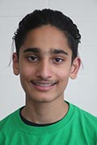
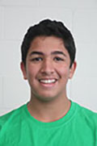
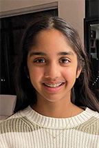

| Name | Bio |
|---|---|
|
Harrison Youth Mentor |
Harrison is one of the youth mentors for Ctrl-Z Bayview Glen. He was on the team for 4 years prior and competed at the FIRST World Championship in St. Louis and Detroit, and the North American Open Championship at LEGOLAND in Carlsbad, California. In FLL, Harrison has learned many life skills in addition to the robot and project, like time management and public speaking. Following his experience in FLL, he is currently involved with Holland Bloorview’s Robotics Program, where he teaches and helps other kids to build and program their own robots. Outside of FLL, he enjoys playing the piano, video games, and ultimate frisbee. |
|
Matthew Youth Mentor |
Matthew is one of the youth mentors for Ctrl-Z Bayview Glen. Prior to this, he was a member of the Ctrl-Z team for 3 years. During his time on Ctrl-Z, he had the opportunity to compete in 2 FIRST Championships, one in St. Louis, and one in Detroit. He also competed in the North American Open Championship in Carlsbad, California. Being in FLL has taught Matthew better public speaking, to think critically, and to teach students more effectively, which he hopes to apply to help Ctrl-Z succeed this season. Outside of robotics, he likes to play video games, the piano, and read. |

Chloe Youth Mentor |
Chloe is a grade 12 student and a youth mentor for the Ctrl-Z team. Prior to mentoring, she was a member of Ctrl-Z for 3 years. During this time, she competed at 2 FIRST Championships: The North American Open Championship in Carlsbad, California, and the FIRST World Championship in Detroit, Michigan. FLL has taught Chloe invaluable skills, including programming, researching, and public speaking. After graduating from the team, Chloe became a volunteer at Botcamp robotics and a member on VEX team #5298. As a mentor, she aims to share her passion with the team members and encourage excitement through teaching. In her free time, Chloe loves to read about science, cook, and run! |
|

Armaan Youth Mentor |
Armaan is one of the youth mentors for Ctrl-Z Bayview Glen. He was on the team for 1 year. During his time on Ctrl-Z, he had the opportunity to compete in the Western Edge Open, in Long Beach California. He also competed in the North American Open Championship in Carlsbad, California. Being in FLL has taught Armaan to problem solve, present and write effectively, and explain complex concepts in a simple way. He hopes to apply these skills to help Ctrl-Z succeed this season. Outside of robotics, he likes to read, play the piano, hike, and do watersports. |
|

Stefano Youth Mentor |
Stefano is one of the youth mentors for Ctrl-Z Bayview Glen. He was on the team last year when Ctrl-Z competed at the Western Edge Open in Long Beach California. Prior to this he was part of FLL team #21544 for 2 years. In FLL, Stefano learned many life skills including research, public speaking, time management, critical thinking and programming. After graduating from the team, he is has become a part of FRC team #7558. Outside of robotics Stefano enjoys playing basketball, piano, and video games. |
|

Riya Youth Mentor |
Riya is a grade 9 student and a youth mentor for the Ctrl-Z team. Prior to mentoring, she was a member of FLL for 2 years on teams TransporTech and Smart Ramen. During this time, she had the opportunity to compete in two Canada Cup events, as well as competitions at the provincial levels. FLL has taught Riya many valuable skills, including programming, researching, and public speaking. After graduating from FLL, Riya became a member of First Robotics Canada on Alt-F4 (team #7558). As a mentor, she aims to share her passion for FLL with the team. Outside of robotics, Riya enjoys basketball, volleyball, and reading. |